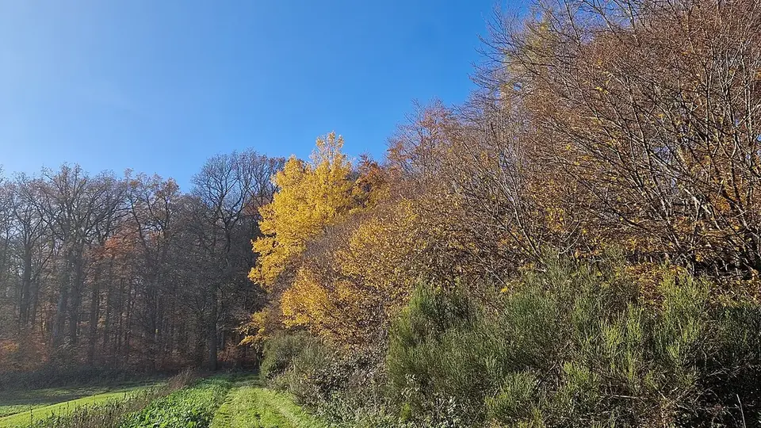

📍 UP · उत्तराखंड · पंजाब🗓️ रोपाई: 15 जन – 15 फर⏱️ 5–7 साल
पॉपलर की खेती
Poplar Farming — Planting Window, Spacing & the Plywood Market
पॉपलर सर्दियों में पूरी पत्तियाँ गिरा देता है — इसीलिए नीचे खड़े गेहूं को पूरी धूप मिलती है। पर इसकी रोपाई की खिड़की सिर्फ एक महीने की है, और भाव लहर की तरह चढ़ता-उतरता है।
✍️ Kunal Rajput — KrashiMitra⏱️ 11 मिनट पढ़ें📅 अगस्त 2026

खेत और जंगल के बीच खड़ा पॉपलर — सर्दी में पत्तियाँ गिरा देने की आदत ही इसे गेहूं का साथी बनाती है।
गेहूं की जगह नहीं, गेहूं के साथ
📉
भाव का चक्र
सबसे बड़ा जोखिम
📏
160–200
पेड़ प्रति एकड़
🌾
रबी पूरी
गेहूं के साथ चलता है
📖
भूमिका
उत्तर प्रदेश के बिजनौर, नजीबाबाद, सहारनपुर और उत्तराखंड के तराई इलाके में खेतों के बीच खड़ी पॉपलर (Populus deltoides) की सीधी-लंबी कतारें आपने ज़रूर देखी होंगी। सागौन जैसे 20 साल के पेड़ों के मुकाबले पॉपलर की सबसे बड़ी खूबी यही है — यह 5 से 7 साल में कट जाता है, और इतने में भी खेत की गेहूं की फसल लगभग पूरी चलती रहती है।
इसकी वजह एक छोटी-सी प्राकृतिक बात है: पॉपलर सर्दियों में अपनी सारी पत्तियाँ गिरा देता है। यानी दिसंबर से फरवरी तक, जब गेहूं को सबसे ज़्यादा धूप चाहिए, ऊपर पेड़ की छाया होती ही नहीं। यही एक गुण पॉपलर को उत्तर भारत की सबसे सफल कृषि-वानिकी (खेती के साथ पेड़) प्रणाली बनाता है। पर एक सच और भी है, जो नर्सरी वाले नहीं बताते — पॉपलर का भाव लहर की तरह चढ़ता-उतरता है, और भीड़ देखकर लगाने वाले किसान अक्सर उतार पर पहुँचते हैं। इस लेख में क्लोन का चुनाव, रोपाई का सही महीना, दूरी, छँटाई और बाज़ार का यही असली गणित।
विज्ञापन
🌗
पॉपलर + गेहूं क्यों चलता है — पत्ती गिरने का गणित
किसी भी पेड़ को खेत में लगाने की सबसे बड़ी दिक्कत छाया है। छाया में गेहूं की बालियाँ हल्की रह जाती हैं। पॉपलर इस दिक्कत को अपने स्वभाव से ही हल कर देता है।
महीना
पॉपलर की हालत
खेत में क्या चल रहा है
दिसंबर – फरवरी
पत्तियाँ पूरी तरह गिरी हुई — पेड़ ठूँठ जैसा
गेहूं को पूरी धूप मिलती है
मार्च – अप्रैल
नई पत्तियाँ निकलनी शुरू
गेहूं पक चुका, कटाई का समय
मई – अक्टूबर
पूरी पत्तियाँ, घनी छाया, तेज़ बढ़वार
खरीफ में छाया-सहनशील फसल ही ठीक रहती है
💡
इसीलिए पॉपलर वाले खेत में रबी (गेहूं, सरसों, आलू, चना) लगभग पूरी तरह चलती है, और खरीफ में मुश्किल होती है। योजना बनाते समय यह मान लीजिए कि आपकी खरीफ की आमदनी 3–4 साल बाद घटेगी — और उसकी भरपाई पेड़ की कटाई से होगी।
🌍
कैसी ज़मीन और कहाँ चलता है
पॉपलर तेज़ बढ़ने वाला पेड़ है, और तेज़ बढ़वार की एक कीमत होती है — इसे पानी और अच्छी ज़मीन दोनों चाहिए। यह सागौन की तरह "लगाकर भूल जाओ" वाला पेड़ नहीं है।
मिट्टी: गहरी, भुरभुरी दोमट या बलुई दोमट। कठोर या भारी चिकनी मिट्टी में बढ़वार आधी रह जाती है।
पानी: नियमित सिंचाई ज़रूरी है। नहर या ट्यूबवेल की सुविधा के बिना पॉपलर से अच्छा परिणाम नहीं मिलता।
जलभराव: पानी चाहिए, पर खेत में ठहरा हुआ पानी नहीं — जड़ सड़ जाती है।
जलवायु: उत्तर भारत का मैदान इसके लिए सबसे उपयुक्त है — जहाँ सर्दी ठीक-ठाक पड़ती हो। सर्दी ही वह संकेत है जिससे पेड़ पत्तियाँ गिराता है। इसीलिए दक्षिण और तटीय भारत में पॉपलर उतना सफल नहीं है।
मुख्य क्षेत्र: उत्तर प्रदेश (बिजनौर, नजीबाबाद, सहारनपुर, बरेली), उत्तराखंड का तराई क्षेत्र, हरियाणा (यमुनानगर), पंजाब (होशियारपुर) और हिमाचल का निचला इलाका।
🌱
पौध (ETP), क्लोन और रोपाई का सही समय
पॉपलर बीज से नहीं, क्लोन से लगाया जाता है — यानी एक चुने हुए अच्छे पेड़ की कलम से तैयार पौधे, जिनकी बढ़वार एक जैसी रहती है। नर्सरी में एक साल पाला गया, लगभग 4–5 मीटर लंबा पौधा "ETP" (Entire Transplant) कहलाता है — यही खेत में लगाया जाता है।
रोपाई का समय:जनवरी के मध्य से फरवरी के मध्य तक — जब पेड़ पत्ती-रहित सुप्त अवस्था में हो। यह समय निकल जाने के बाद लगाई गई ETP की सफलता तेज़ी से गिरती है। यही पॉपलर की सबसे कड़ी शर्त है।
क्लोन का चुनाव: अपने इलाके में पहले से सफल क्लोन ही लें। किसी दूर के राज्य में अच्छा चलने वाला क्लोन आपके यहाँ वैसा नहीं चलता। नज़दीकी कृषि विज्ञान केंद्र (KVK), वन अनुसंधान संस्थान या कृषि विश्वविद्यालय से पूछकर अपने क्षेत्र के लिए संस्तुत क्लोन का नाम लें।
गड्ढा: ETP लंबी होती है, इसलिए गड्ढा गहरा चाहिए — आम तौर पर ऑगर (गड्ढा मशीन) से लगभग 1 मीटर गहरा। पौधा गिरे नहीं, इसके लिए गहराई ज़रूरी है।
रोपाई के तुरंत बाद पानी दें — यह सबसे ज़रूरी सिंचाई है।
सहारा: तेज़ हवा वाले इलाके में शुरुआती महीनों में बाँस का सहारा लगाना फायदेमंद रहता है।
दूरी
लगभग पेड़ / एकड़
किसके लिए
5 × 4 मीटर
लगभग 200
सबसे आम — पेड़ और फसल दोनों का संतुलन
5 × 5 मीटर
लगभग 160
फसल को प्राथमिकता; पेड़ की मोटाई भी अच्छी
8 × 2.5 मीटर (जोड़ी कतार)
लगभग 200
चौड़ी गली में ट्रैक्टर और फसल दोनों आराम से चलती है
मेड़ पर एक कतार
दूरी 3 मीटर
सबसे कम जोखिम — खेत की फसल पर असर नहीं
💡
कतारें हमेशा उत्तर-दक्षिण दिशा में लगाएँ। इससे दिन भर में छाया खेत के एक ही हिस्से पर टिकी नहीं रहती, बल्कि घूमती रहती है — और फसल का नुकसान काफी घट जाता है।
विज्ञापन
✂️
देखभाल और छँटाई — सीधा तना ही पैसा है
पॉपलर की लकड़ी मुख्य रूप से प्लाईवुड बनाने जाती है। प्लाईवुड मिल में लट्ठे को घुमाकर उसका पतला छिलका (विनियर) उतारा जाता है — और इस काम के लिए तना जितना सीधा, गोल और गाँठ-रहित होगा, दाम उतना अच्छा मिलेगा। टेढ़ा या गाँठदार लट्ठा सीधे ईंधन/पैकिंग की कम दाम वाली श्रेणी में चला जाता है।
छँटाई (प्रूनिंग) हर साल: नीचे की डालें सर्दियों में, पत्ती गिरने के बाद काटें। हर साल तने के निचले हिस्से को साफ करते जाएँ। सामान्य नियम — पेड़ की कुल ऊँचाई का लगभग आधा हिस्सा नीचे से साफ रखें, इससे ज़्यादा एक बार में न काटें।
कटाई तने से सटाकर करें, ठूँठ छोड़ने पर वहाँ गाँठ बन जाती है। औज़ार तेज़ और साफ हो।
सिंचाई: गर्मियों में नियमित पानी। पहले दो साल में पानी की कमी सीधे मोटाई पर दिखती है।
खाद: बीच में ली जा रही फसल को दी गई खाद का फायदा पेड़ को भी मिल जाता है। अलग से खाद देनी हो तो मिट्टी जाँच के आधार पर ही दें।
निराई: शुरुआती दो साल थाले के आसपास घास साफ रखें।
रोग-कीट: पत्तियों पर धब्बे (लीफ स्पॉट) और तने की छाल पर घाव (कैंकर) पॉपलर की आम समस्याएँ हैं। संक्रमित डाल काटकर हटा दें और साफ-सफाई रखें; ज़्यादा फैलाव दिखे तो कृषि विज्ञान केंद्र से पहचान कराकर ही उपचार करें।
🌾
अंतर-फसल — यही पॉपलर की असली ताकत है
पेड़ की उम्र
रबी (सर्दी)
खरीफ (बरसात)
1 – 2 साल
गेहूं, सरसों, आलू, चना — लगभग सामान्य उपज
धान, मक्का, गन्ना, सब्ज़ी — सब चल जाता है
3 – 4 साल
गेहूं, सरसों, आलू — उपज में हल्की कमी
छाया बढ़ने लगती है — हल्दी, अरबी, चारा बेहतर
5 – 7 साल
गेहूं अब भी संभव, पर उपज घटती है
छाया घनी — ज़्यादातर खरीफ फसल मुश्किल
कई किसान हल्दी और अदरक को पॉपलर के साथ पसंद करते हैं, क्योंकि ये छाया में भी ठीक चलती हैं और दाम अच्छा देती हैं। पशुपालक चारे की फसल लेकर भी अच्छा उपयोग कर लेते हैं।
💰
बाज़ार का सच — भाव लहर की तरह चलता है
यह इस लेख का सबसे ज़रूरी हिस्सा है, और यही वह बात है जो पॉपलर लगवाने वाले अक्सर छिपा जाते हैं।
पॉपलर की लगभग पूरी खपत प्लाईवुड उद्योग करता है — और उत्तर भारत में इसका सबसे बड़ा केंद्र यमुनानगर (हरियाणा) है। इसका मतलब यह है कि आपकी लकड़ी का दाम खेती की परिस्थितियों से नहीं, प्लाईवुड उद्योग की माँग से तय होता है। जब मिलों को माल कम मिलता है तो भाव चढ़ता है; भाव देखकर सारे किसान एक साथ पॉपलर लगा देते हैं; 5–6 साल बाद वह सारा माल एक साथ बाज़ार में आता है और भाव गिर जाता है। भारत में यह चक्र एक से ज़्यादा बार हो चुका है और कई किसानों को उम्मीद से बहुत कम दाम मिला है।
बिक्री का तरीका: पॉपलर आम तौर पर वज़न (क्विंटल) के हिसाब से बिकता है, गिनती से नहीं। तने की मोटाई और लंबाई के अनुसार श्रेणी बनती है।
ढुलाई मायने रखती है: मिल जितनी दूर, हाथ में आने वाली रकम उतनी कम।
अकेले सौदा न करें: गाँव के 4–5 किसान मिलकर एक साथ माल बेचें तो सौदेबाज़ी की ताकत बढ़ती है और ट्रक भी पूरा भरता है।
सारे पेड़ एक साथ मत लगाइए: अगर 4 एकड़ में लगाना है, तो हर साल 1 एकड़। इससे हर साल कुछ न कुछ कटेगा और आप किसी एक साल के गिरे हुए भाव में पूरी फसल बेचने को मजबूर नहीं होंगे। यह इस पूरे लेख की सबसे काम की सलाह है।
⚠️
पॉपलर का भाव मंडी भाव की तरह रोज़ प्रकाशित नहीं होता और इलाके-इलाके में अलग रहता है। पौध खरीदने से पहले अपने नज़दीकी प्लाईवुड मिल या लकड़ी के आढ़ती से मौजूदा भाव खुद पूछिए, और 4–5 साल पहले क्या भाव था यह भी पूछिए — इससे आपको चक्र का अंदाज़ा लग जाएगा। किसी भी "गारंटीड बायबैक" के वादे पर पौध मत खरीदिए। कृषि मित्र कोई निवेश सलाह नहीं देता।
📜
कटाई और परिवहन की अनुमति
अच्छी खबर यह है कि पॉपलर को कई राज्यों ने कृषि-वानिकी को बढ़ावा देने के लिए नियमों में छूट दी हुई है, क्योंकि यह स्पष्ट रूप से किसान द्वारा लगाई गई प्रजाति है और जंगल में प्राकृतिक रूप से नहीं उगती। कई जगह इसकी कटाई और परिवहन की प्रक्रिया सागौन जैसी प्रजातियों की तुलना में काफी आसान है।
फिर भी पहले पुष्टि करें: छूट की सूची और प्रक्रिया हर राज्य में अलग है और समय के साथ बदलती है।
रोपाई का रिकॉर्ड रखें: कितने पेड़, किस खसरा/गाटा संख्या पर, किस साल — यह लिखकर रखें और हो सके तो राजस्व रिकॉर्ड में दर्ज करा लें।
बेचने से पहले पूछें: अपने जिला वन कार्यालय (DFO) से अपने राज्य की मौजूदा प्रक्रिया की पुष्टि कर लें।
⚠️
पेड़ों की कटाई-परिवहन के नियम राज्य के अनुसार अलग हैं और बदलते रहते हैं। यह लेख किसी राज्य के मौजूदा नियम की आधिकारिक जानकारी नहीं है — कटाई से पहले अपने जिला वन अधिकारी (DFO) या राज्य वन विभाग से ही पुष्टि करें।
🚫
ये गलतियाँ कभी न करें
रोपाई का समय चूक जाना — जनवरी-मध्य से फरवरी-मध्य की खिड़की निकलने के बाद लगाई गई ETP अक्सर नहीं चलती। यह पॉपलर की सबसे कड़ी शर्त है।
बिना सिंचाई की सुविधा के लगाना — पॉपलर तेज़ बढ़ने वाला पेड़ है और उसे पानी चाहिए। बारिश के भरोसे इसकी बढ़वार आधी रह जाती है।
छँटाई न करना — गाँठदार लट्ठा प्लाईवुड की श्रेणी से बाहर हो जाता है, और दाम बहुत गिर जाता है।
पूरी ज़मीन एक ही साल में लगा देना — सारा माल एक साथ बाज़ार में आएगा, और भाव जो भी हो, बेचना मजबूरी होगी।
भीड़ देखकर लगाना — "इस बार सब लगा रहे हैं" यही वह संकेत है कि 5 साल बाद माल ज़्यादा और भाव कम होगा।
अनजान क्लोन लेना — अपने इलाके के लिए संस्तुत क्लोन ही लें, दूसरे राज्य का सफल क्लोन यहाँ वैसा नहीं चलता।
दूरी बहुत कम रखना — पास-पास लगे पेड़ पतले रह जाते हैं और बीच की फसल भी मारी जाती है।
🗓️
साल-दर-साल — कब क्या करना है
समय
ज़रूरी काम
नवंबर – दिसंबर
ETP बुक करें; ऑगर से गड्ढे तैयार कराएँ; क्लोन का नाम KVK से पक्का करें
15 जनवरी – 15 फरवरी
रोपाई की मुख्य खिड़की — पत्ती-रहित अवस्था में ETP लगाएँ, तुरंत पानी दें
पहला साल
थाला साफ, नियमित सिंचाई, तेज़ हवा में सहारा; मरे पौधे बदलें
हर सर्दी (पत्ती गिरने के बाद)
नीचे की डालों की छँटाई — तने से सटाकर, हर साल
हर रबी
गेहूं / सरसों / आलू / चना की अंतर-फसल
3 – 4 साल
खरीफ में छाया-सहनशील फसल (हल्दी, अरबी, चारा) पर आ जाएँ
5 – 7 साल
कटाई; उससे पहले 2–3 मिलों/आढ़तियों से भाव पूछें, गाँव में मिलकर बेचें
✅
निष्कर्ष
तीन बातें याद रखिए। पहली — रोपाई की खिड़की जनवरी-मध्य से फरवरी-मध्य तक है, यह चूकी तो पूरा साल गया। दूसरी — हर साल छँटाई करिए, क्योंकि प्लाईवुड मिल सीधा और गाँठ-रहित लट्ठा ही अच्छे दाम पर लेती है। तीसरी और सबसे ज़रूरी — पूरी ज़मीन एक साथ मत लगाइए; हर साल थोड़ा-थोड़ा लगाइए ताकि भाव के चक्र में आप फँसें नहीं।
पॉपलर उन गिने-चुने पेड़ों में है जो आपकी गेहूं की फसल को लगभग छुए बिना खेत में खड़ा रहता है। इसे उसी नज़र से देखिए — गेहूं के साथ चलने वाली एक अतिरिक्त कमाई, गेहूं की जगह लेने वाली फसल नहीं।
पॉपलर में पैसा पेड़ की गिनती से नहीं, सही समय पर लगाने और सही समय पर बेचने से बनता है।
विज्ञापन
❓
अक्सर पूछे जाने वाले सवाल
1पॉपलर का पेड़ कितने साल में तैयार होता है?
पॉपलर आम तौर पर 5 से 7 साल में कटाई लायक हो जाता है। यही इसकी सबसे बड़ी खूबी है — सागौन जैसे पेड़ों में 20–25 साल लगते हैं। अच्छी ज़मीन, नियमित सिंचाई और हर साल की छँटाई से यह समय कम और मोटाई ज़्यादा रहती है।
2पॉपलर लगाने का सही समय कौन सा है?
15 जनवरी से 15 फरवरी के बीच, जब पेड़ पत्ती-रहित सुप्त अवस्था में होता है। यह पॉपलर की सबसे कड़ी शर्त है — यह खिड़की निकल जाने के बाद लगाई गई ETP की सफलता तेज़ी से गिरती है, इसलिए पौध पहले से बुक करा लें।
3पॉपलर के साथ गेहूं की फसल क्यों ली जा सकती है?
क्योंकि पॉपलर सर्दियों में अपनी सारी पत्तियाँ गिरा देता है। दिसंबर से फरवरी तक, जब गेहूं को सबसे ज़्यादा धूप चाहिए, ऊपर छाया होती ही नहीं। इसी वजह से पॉपलर उत्तर भारत की सबसे सफल कृषि-वानिकी प्रणाली है। खरीफ में छाया रहती है, इसलिए बरसात की फसल 3–4 साल बाद प्रभावित होती है।
4एक एकड़ में पॉपलर के कितने पेड़ लगते हैं?
दूरी के अनुसार लगभग 160 से 200 पेड़ प्रति एकड़। 5×4 मीटर पर करीब 200 और 5×5 मीटर पर करीब 160 पेड़ आते हैं। कतारें उत्तर-दक्षिण दिशा में रखें ताकि छाया एक ही जगह न टिके और बीच की फसल कम प्रभावित हो।
5पॉपलर की लकड़ी कहाँ बिकती है?
इसकी लगभग पूरी खपत प्लाईवुड उद्योग करता है — उत्तर भारत में सबसे बड़ा केंद्र यमुनानगर (हरियाणा) है। लकड़ी आम तौर पर वज़न (क्विंटल) के हिसाब से बिकती है, और सीधा, गोल, गाँठ-रहित लट्ठा सबसे अच्छे दाम पर जाता है।
6क्या पॉपलर का भाव हमेशा एक जैसा रहता है?
नहीं — पॉपलर का भाव चक्र में चलता है। भाव ऊँचा होने पर सब किसान एक साथ लगा देते हैं, 5–6 साल बाद वह सारा माल एक साथ बाज़ार में आता है और भाव गिर जाता है। इससे बचने का सबसे आसान तरीका है हर साल थोड़ी-थोड़ी ज़मीन में लगाना, ताकि हर साल कुछ कटे और किसी एक गिरे हुए साल पर सब कुछ निर्भर न रहे।
7क्या पॉपलर काटने के लिए अनुमति चाहिए?
कई राज्यों ने कृषि-वानिकी को बढ़ावा देने के लिए पॉपलर को नियमों में छूट दी हुई है, क्योंकि यह स्पष्ट रूप से किसान की लगाई प्रजाति है। फिर भी छूट की सूची और प्रक्रिया हर राज्य में अलग है और बदलती रहती है — काटने से पहले अपने जिला वन कार्यालय (DFO) से पुष्टि कर लें और रोपाई का रिकॉर्ड अपने पास रखें।
8पॉपलर की छँटाई कब और कितनी करनी चाहिए?
छँटाई हर साल सर्दियों में, पत्तियाँ गिरने के बाद करें। सामान्य नियम यह है कि पेड़ की कुल ऊँचाई का लगभग आधा हिस्सा नीचे से साफ रखें — इससे ज़्यादा एक बार में न काटें। डाल तने से सटाकर काटें, ठूँठ छोड़ने पर वहीं गाँठ बन जाती है जो लकड़ी का दाम घटा देती है।
🌾
KrashiMitra.in — आपका विश्वसनीय कृषि साथी
मंडी भाव, सरकारी योजनाएं, बीज-खाद की जानकारी और फसल रोग उपचार — सब कुछ हिंदी में।